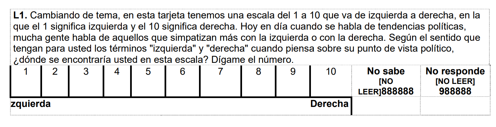

Al finalizar esta sesión, el alumno deberá comprender .
7.2 Presentación
7.3 Identificar la asociación entre dos factores
7.3.1 ¿Qué es asociación?
Cuando decimos que dos factores están asociados, nos referimos a que hay una relación estadística significativa entre ellos. En otras palabras, el comportamiento o la distribución de una variable categórica depende de la otra variable categórica.
Imaginemos que estamos estudiando dos factores: ámbito (rural y urbano) y satisfacción con la democracia (sí y no). ¿La satisfacción con la democracia estará asociada al ámbito donde proviene la persona encuestada?
Independencia: Si estos dos factores fueran independientes, la proporción de personas satisfechas con la democracia sería la misma tanto en áreas rurales como urbanas. La distribución observada de la satisfacción con la democracia no varía según el ámbito.
Asociación: Si estos dos factores están asociados, la proporción de personas satisfechas con la democracia podría diferir entre áreas rurales y urbanas. Por ejemplo, podría haber una mayor proporción de personas satisfechas en áreas urbanas comparado con áreas rurales, o viceversa.
# Crear vectores de tipo factorambito <-factor(c("rural", "urbano", "rural", "urbano", "urbano", "rural", "urbano", "rural"))satisfecho <-factor(c("no", "no", "sí", "sí", "sí", "no", "sí", "no"))# Crear un data framedatos <-data.frame(ambito, satisfecho)datos
ambito satisfecho
1 rural no
2 urbano no
3 rural sí
4 urbano sí
5 urbano sí
6 rural no
7 urbano sí
8 rural no
Aquí podemos analizar previamente cómo se distribuye la satisfacción con la democracia a nivel general:
library(tidyverse)
── Attaching core tidyverse packages ──────────────────────── tidyverse 2.0.0 ──
✔ dplyr 1.1.4 ✔ readr 2.1.5
✔ forcats 1.0.0 ✔ stringr 1.5.1
✔ ggplot2 3.5.1 ✔ tibble 3.2.1
✔ lubridate 1.9.3 ✔ tidyr 1.3.1
✔ purrr 1.0.2
── Conflicts ────────────────────────────────────────── tidyverse_conflicts() ──
✖ dplyr::filter() masks stats::filter()
✖ dplyr::lag() masks stats::lag()
ℹ Use the conflicted package (<http://conflicted.r-lib.org/>) to force all conflicts to become errors
datos |>count(satisfecho) |>mutate(p=n/sum(n)*100)
satisfecho n p
1 no 4 50
2 sí 4 50
7.3.2 Tabla de contingencia
Una tabla de contingencia, también conocida como tabla de frecuencia cruzada, es una forma de organizar y resumir datos en el contexto de un estudio o investigación. Se utiliza para analizar la relación entre dos o más variables categóricas y mostrar cómo se distribuyen las observaciones en cada combinación de categorías.
En una tabla de contingencia, las variables de interés se representan en filas y columnas, y se registran las frecuencias o recuentos de las observaciones que caen en cada combinación de categorías. Esto permite visualizar de manera clara y estructurada cómo se relacionan las variables y si existe alguna asociación o dependencia entre ellas.
Las tablas de contingencia son especialmente útiles cuando se quiere examinar la relación entre variables categóricas, como género y preferencia política, ubicación geográfica y nivel educativo, o, como en este caso, el ámbito y si asiste a manifestaciones o no.
Para ello, podemos utilizar una librería denominada gtsummary. Esta nos muestra una tabla de contingencia donde podemos observar las frecuencias y también los porcentajes.
Abrimos y configuramos la tabla para que esté en español y con puntos como separador decimal.
Luego solicitamos una tabla de las dos variables que deseamos comparar.
datos |>select(ambito, satisfecho) |>tbl_summary(by=ambito)
Característica
rural, N = 41
urbano, N = 41
satisfecho
no
3 (75%)
1 (25%)
sí
1 (25%)
3 (75%)
1 n (%)
Para leer la tabla podemos seguir los siguientes pasos generales:
Leer fila por fila y de derecha a izquierda, y se interpretan los porcentajes.
Comenzamos por la primera fila de respuestas y analizamos si varían los porcentajes entre las categorías de la variable de grupo (la que está en columnas).
Más diferencia de porcentajes en cada fila (entre las categorías de la variable en columnas), más fuerte es la relación entre las variables.
Si no hay diferencias de respuestas, es decir, si los porcentajes en una misma fila son muy similares es que no hay relación entre las variables
Importante
De los dos factores, ¿cuál es el grupo de comparación? El investigador normalmente desea investigar la distribución de una variable categórica particular (FILAS) en una variable de grupo (COLUMNAS). En nuestro caso, la primera sería “satisfecho” y la de grupo “ámbito”.
7.3.3 Visualizar la asociación
Es necesario hacer un gráfico para ver la asociación entre dos factores porque los gráficos proporcionan una visualización clara y rápida de las relaciones y patrones en los datos que pueden no ser evidentes en una tabla de contingencia.
Un gráfico de barras acumuladas, por ejemplo, permite observar fácilmente cómo se distribuyen las categorías de una variable en relación con otra, facilitando la comparación visual de proporciones y destacando posibles asociaciones o diferencias significativas entre los grupos.
ggplot(datos, aes(x = ambito, fill = satisfecho)) +geom_bar(position ="fill")
La opción position = “fill” dentro de geom_bar() en ggplot2 se utiliza para crear un gráfico de barras apiladas donde cada barra representa proporciones acumuladas de las diferentes categorías dentro de una variable. Esta opción hace que cada barra tenga una altura total de 1 (o 100%), y las secciones dentro de la barra se escalen proporcionalmente a su contribución total. Esto permite comparar las distribuciones relativas de las categorías dentro de cada grupo de barras, independientemente del tamaño absoluto de los grupos.
Si deseas, puedes personalizar aún más el gráfico:
ggplot(datos, aes(x = ambito, fill = satisfecho)) +geom_bar(position ="fill") +geom_text(aes(label = scales::percent(..count../tapply(..count.., ..x.., sum)[..x..], accuracy =1)),stat ="count",position =position_fill(vjust =0.5)) +labs(title ="Gráfico de Barras Acumuladas por Ámbito y Satisfacción con la Democracia",x ="Ámbito",y ="Proporción") +scale_fill_manual(values =c("sí"="blue", "no"="red")) +#opcionaltheme_minimal()
Warning: The dot-dot notation (`..count..`) was deprecated in ggplot2 3.4.0.
ℹ Please use `after_stat(count)` instead.
7.4 Prueba de hipótesis: Chi cuadrado
La prueba chi-cuadrado (χ²) es una prueba estadística utilizada para determinar si existe una asociación entre dos variables categóricas en una población.
Recuerda:
ASOCIACIÓN
Indica si la distribución de frecuencias de una variable está relacionada de alguna manera con la distribución de frecuencias de la otra variable.
El objetivo de la prueba chi-cuadrado (χ²) es evaluar si las diferencias observadas en la distribución de frecuencias entre las categorías de las variables son significativas o podrían haber ocurrido por azar.
La prueba chi-cuadrado se basa en comparar las frecuencias observadas en una tabla de contingencia con las frecuencias que se esperarían si no hubiera ninguna asociación entre las variables. La idea es calcular un estadístico chi-cuadrado, el cual mide la discrepancia entre las frecuencias observadas y las esperadas bajo la hipótesis nula de independencia.
Es una prueba ampliamente utilizada y de fácil interpretación, lo que la convierte en una herramienta valiosa en el análisis de datos categóricos.
Debemos plantear las hipótesis nula y alternativa.
Hipótesis
Descripción
Hipótesis nula
No existe asociación
Hipótesis alterna
Sí existe asociación.
Para calcular la prueba de hipótesis utilizamos la función chisq.test:
tabla_simple<-table(datos$satisfecho, datos$ambito)prueba <-chisq.test(tabla_simple) # Colocamos la tabla con las frecuencias simples
Warning in chisq.test(tabla_simple): Chi-squared approximation may be incorrect
prueba
Pearson's Chi-squared test with Yates' continuity correction
data: tabla_simple
X-squared = 0.5, df = 1, p-value = 0.4795
En este caso calculamos que el estadístico de prueba. Recuerda que como vimos en el T.test, lo que hacemos es comparar un indicador (estadístico de prueba) calculado con la variabilidad de nuestra muestra con un valor teórico.
Tenemos los siguientes escenarios
Resultado
Decisión
\(p-value <=\alpha\)
Rechazamos la hipótesis nula.
\(p-value >\alpha\)
No rechazamos la hipótesis nula.
Habíamos escogido un \(\alpha = 0.05\) por lo que al obtener un p-valor de 0.4795 no podemos rechazar la hipótesis nula de que no existe asociación en las variables elegidas.
Vemos que a pesar de que visualizamos una diferencia en nuestra muestra, esta no es estadísticamente significativa.
7.4.1 Verificación de supuestos
Para analizar asociación se requiere que el número de observaciones esperadas en cada celda de la tabla de contingencia debe ser suficientemente grande.
Para fines de este curso, al menos cada celda de la TC de frecuencias esperadas debe ser de 5.
Ten en cuenta que si estas condiciones no se cumplen, entonces la prueba podría no funcionar adecuadamente y los resultados de la prueba podrían no ser válidos. Si es que encuentran que no se cumple este supuesto:
Repórtalo!
En nuestro caso, debido al tamaño de la muestra, no pasamos este requisito.
chisq.test(tabla_simple)$expected
Warning in chisq.test(tabla_simple): Chi-squared approximation may be incorrect
rural urbano
no 2 2
sí 2 2
Ejercicio 1
El Proyecto de Opinión Pública de América Latina (LAPOP) es un proyecto de investigación multinacional especializando en el desarrollo, implementación y análisis de encuestas de opinión pública.
La encuesta mide los valores y comportamientos democráticos en el continente americano usando muestras probabilísticas nacionales de la población adulta en edad de votar.
Puede visualizar el cuestionario de la encuesta 2018 aqui
El presente estudio tiene como objetivo investigar la posible asociación entre el ámbito de residencia (urbano, rural) y la asistencia a manifestaciones. Las manifestaciones públicas son eventos que reflejan la participación activa de la población en la expresión de demandas, opiniones o protestas sobre temas sociales, políticos o económicos.
Las brechas entre los contextos urbanos y rurales podría influir en la participación y la motivación de las personas para asistir a manifestaciones. Se plantea la hipótesis de que existe una asociación entre el ámbito de residencia y la asistencia a manifestaciones.
Identificamos y configuramos las variables
Identifique la variable prot3 “En los últimos 12 meses ha participado en una manifestación o protesta pública” y configure adecuadamente.
table(lapop$prot3)
1 2
217 1303
lapop$prot3<-factor(lapop$prot3, # Nombre de la variable a convertirlevels=1:2, # Definimos los niveles (esta variable sólo tenía 2 niveles)labels=c("Sí participó", "No participó")) #Colocamos sus etiquetastable(lapop$prot3)
Sí participó No participó
217 1303
Configure adecuadamente la variable TAMANO a fin de que existan dos grupos (cree una copia que se llame “AMBITO”):
1: Zona urbana (Capital Nacional/Ciudad Grande/Ciudad mediana/ Ciudad pequeña)
lapop$ambito<-factor(lapop$ambito, # Nombre de la variable a convertirlevels=1:2, # Definimos los niveles (esta variable sólo tenía 2 niveles)labels=c("Urbano", "Rural")) #Colocamos sus etiquetastable(lapop$ambito)
Urbano Rural
1165 356
Comparación clave
Recuerdas nuestra pregunta de investigación?
Queremos saber si existe una asociación entre el ámbito de residencia y la asistencia a manifestaciones.
Dicho de otra forma:
prop.table(table(lapop$prot3))
Sí participó No participó
0.1427632 0.8572368
A nivel de toda la muestra vemos que el 14.3% asistió a una manifestación y el 85.7% no. Estos porcentajes se replicaran también en el ámbito rural y en el ámbito urbano?
También lo podemos ver con una gtsummary.
lapop |>select(prot3) |>tbl_summary()
Característica
N = 1,5211
prot3
Sí participó
217 (14%)
No participó
1,303 (86%)
Desconocido
1
1 n (%)
Paso 1: Análisis exploratorio de datos
Ahora solicitamos una tabla cruzada o de contigencia donde nuestros grupos de comparación es el ámbito.
lapop |>ggplot()+aes(x = ambito, fill = prot3) +geom_bar(position ="fill")
O también:
ggplot(lapop, aes(x = ambito, fill = prot3)) +geom_bar(position ="fill") +geom_text(aes(label = scales::percent(..count../tapply(..count.., ..x.., sum)[..x..], accuracy =1)),stat ="count",position =position_fill(vjust =0.5)) +labs(title ="Gráfico de Barras Acumuladas por Ámbito y Protesta",x ="Ámbito",y ="Proporción") +scale_fill_manual(values =c("Sí participó"="blue", "No participó"="red")) +#opcionaltheme_minimal()
Paso 2: Realizar la prueba de hipótesis
Hipótesis
Lo primero que debemos plantear son las hipótesis nula y alternativa.
Recuerda que cada prueba tiene su hipótesis nula, por lo que hay que memorizar algunas de estas. En el caso de la Prueba Chi cuadrado, las hipótesis son las siguientes:
Hipótesis
Descripción
Hipótesis nula
No existe asociación
Hipótesis alterna
Sí existe asociación.
Estas son las hipótesis que vamos a validar con nuestra prueba.
Asimismo, debemos recordar que estamos trabajando a un 95% de confianza, por lo que nuestro nivel de significancia será 0.05.
\[\alpha = 0.05\]
Calcular p-valor
Para calcular la prueba de hipótesis utilizamos la función chisq.test:
tabla_simple<-table(lapop$prot3, lapop$ambito)prueba <-chisq.test(tabla_simple) # Colocamos la tabla con las frecuencias simplesprueba
Pearson's Chi-squared test with Yates' continuity correction
data: tabla_simple
X-squared = 2.3357, df = 1, p-value = 0.1264
Obtenemos un p-valor de 0.1264
Verificación de supuesto
En nuestro caso, verificamos este supuesto?
chisq.test(tabla_simple)$expected
Urbano Rural
Sí participó 166.3191 50.68092
No participó 998.6809 304.31908
Paso 3: Informar los resultados
Tenemos los siguientes escenarios
Resultado
Decisión
\(p-value <\alpha\)
Rechazamos la hipótesis nula.
\(p-value >=\alpha\)
No rechazamos la hipótesis nula.
Habíamos escogido un \(\alpha = 0.05\) por lo que al obtener un p-valor de 0.1264 no podemos rechazar la hipótesis nula de que no existe asociación en las variables elegidas.
Vemos que a pesar de que visualizamos una diferencia en nuestra muestra, esta no es estadísticamente significativa.
Luego de realizar una prueba chi cuadrado, a un 95% de confianza, obtuvimos un p-valor de 0.1264, por lo que no podemos rechazar la hipótesis nula de que existe asociación entre la asistencia a manifestaciones y la procedencia de la persona. Por ello, concluimos que no existen asociación estadísticamente significativas en los grupos poblacionales indicados.
Ejercicio 2
Ahora realiza la comparación de la misma variable prot3 (En los últimos 12 meses ha participado en una manifestación o protesta pública) pero considerando como grupo la posición ideológica de la persona
Para ello, utiliza la variable l1.

Recodifique a fin de que los valores 1-4 sea “Izquierda”, 5-6 “Centro” y 7-10 “Derecha”. Siga cada uno de los pasos indicados y concluya si ambas variables están asociadas o no en la población.